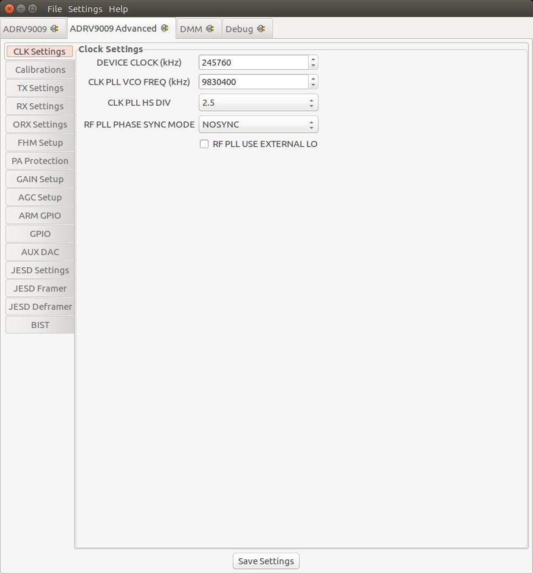
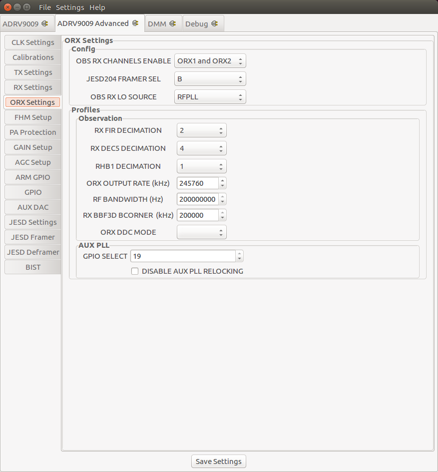
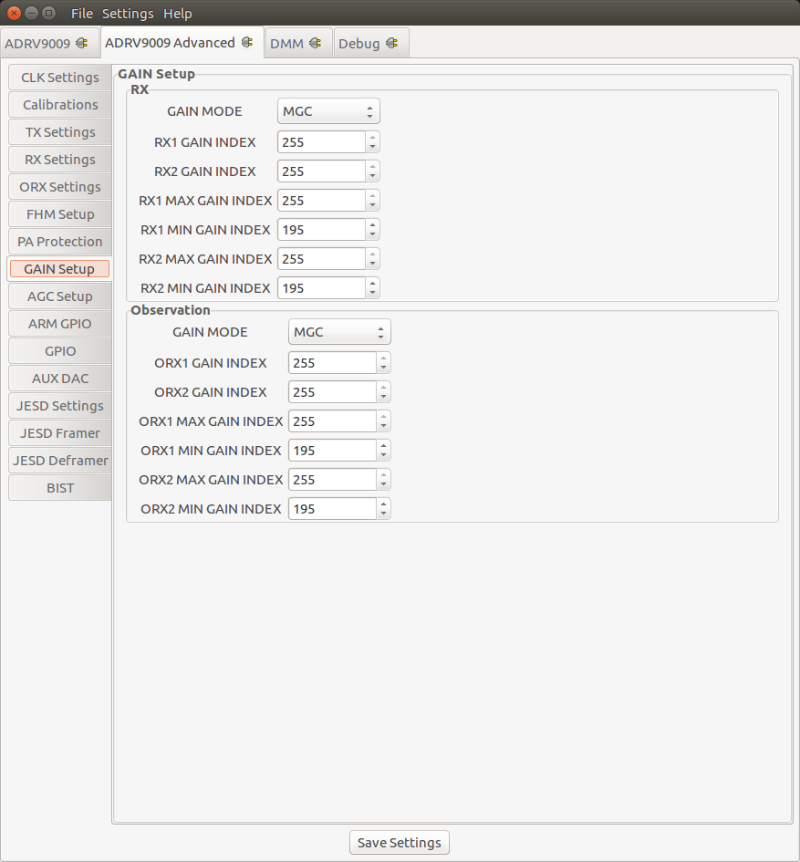
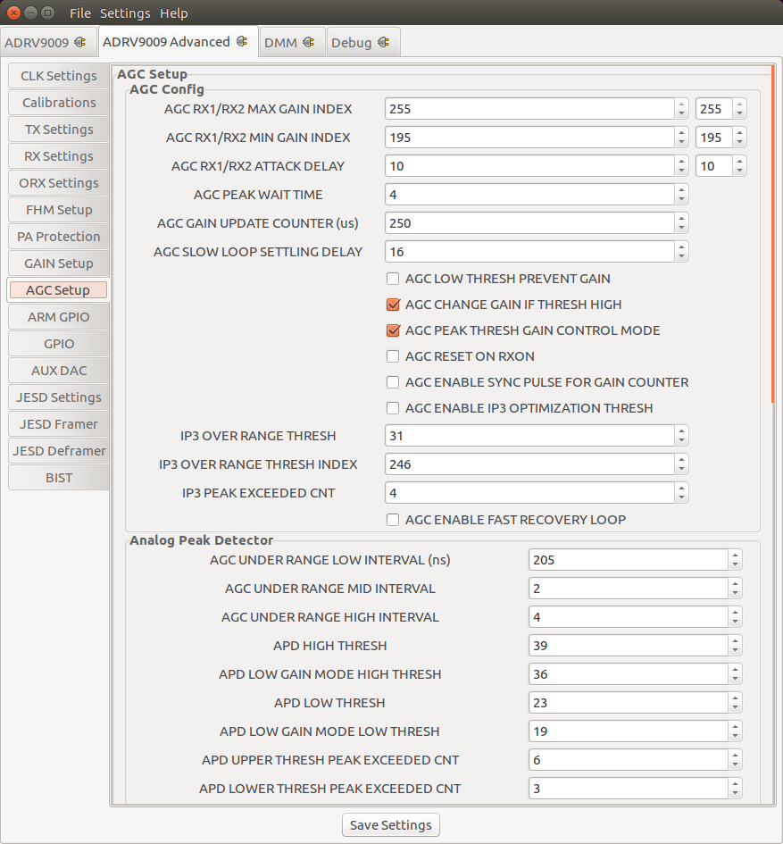
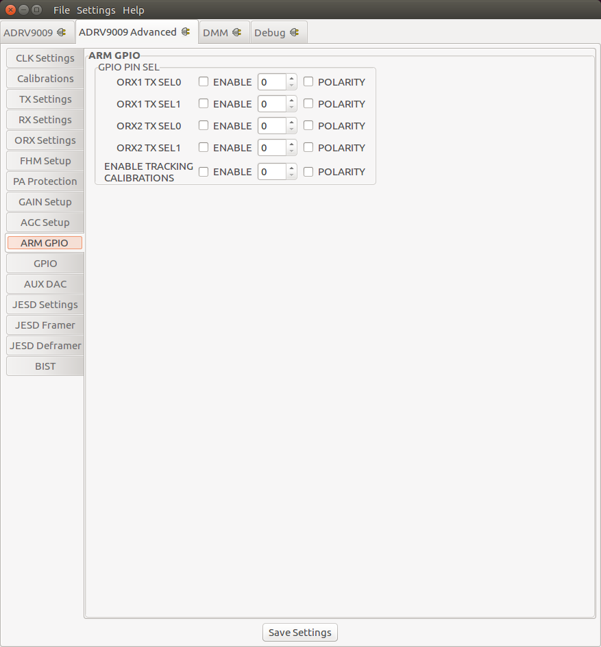
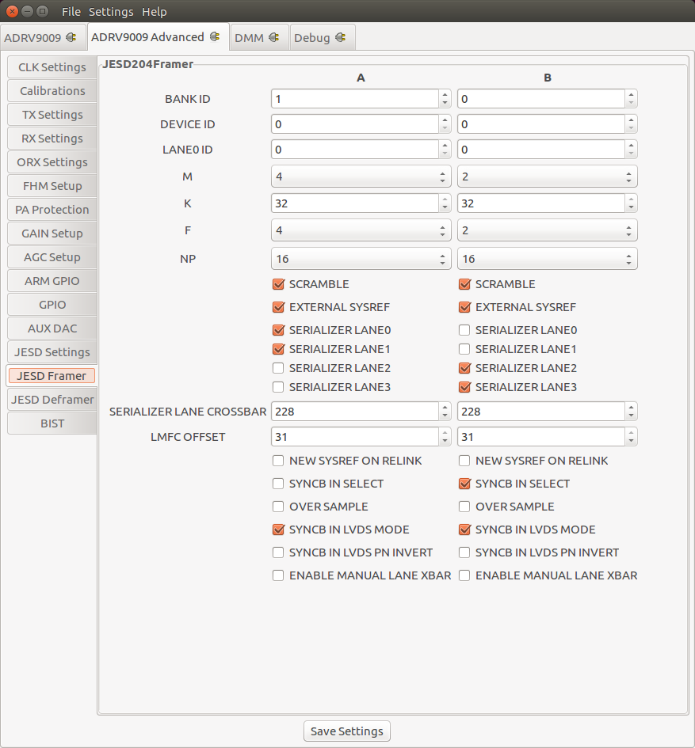

Advanced plugin#
The ADRV9009/ADRV9008 Advanced plugin works with the IIO Oscilloscope. You always use the latest version if possible. Changing any field will immediately write changes which have been made to the ADRV9009 settings to the driver, but not to the HW unless the Save Settings button is pressed.
The ADRV9009 Advanced Plugin allows testing of different device driver initialization options and values. In contrast to the controls on the Standard Plugin – the controls here are not part of the main driver API.
In the No-OS driver the values directly correspond to members of the (taliseInit_t) talInit init structure. For the ADRV9009 Linux Device Driver each control corresponds to a specific devicetree property. Since the ADRV9009 Linux driver uses the Analog Devices provided API driver. Ultimately also for the Linux driver maps any settings back to the taliseInit_t init structure. It’s therefore recommended to consult the ADRV9009 User Guide for more information about the options provided here.

See more details about ADRV9009/ADRV9008 Customization.
In order for the settings made on these plugin to take affect, the Save Settings button must be pressed. It should be noted that the driver then reinitialized the ADRV9009 from reset, which will rerun all calibrations and this may take several seconds to complete.
Tip
After you customized the driver for your application needs you can read back all values from the Linux debugfs:
pwd
# /sys/bus/iio/devices/iio:device3
cd /sys/kernel/debug/iio/iio\:device3
grep "" * | sed "s/:/ = </g" | awk '{print $0">;"}'
# adi,arm-gpio-config-en-tx-tracking-cals-enable = <0>;
# adi,arm-gpio-config-en-tx-tracking-cals-gpio-pin-sel = <0>;
# adi,arm-gpio-config-en-tx-tracking-cals-polarity = <0>;
# adi,arm-gpio-config-orx1-tx-sel0-pin-enable = <0>;
# adi,arm-gpio-config-orx1-tx-sel0-pin-gpio-pin-sel = <0>;
# adi,arm-gpio-config-orx1-tx-sel0-pin-polarity = <0>;
# adi,arm-gpio-config-orx1-tx-sel1-pin-enable = <0>;
# adi,arm-gpio-config-orx1-tx-sel1-pin-gpio-pin-sel = <0>;
# adi,arm-gpio-config-orx1-tx-sel1-pin-polarity = <0>;
# adi,arm-gpio-config-orx2-tx-sel0-pin-enable = <0>;
# adi,arm-gpio-config-orx2-tx-sel0-pin-gpio-pin-sel = <0>;
# adi,arm-gpio-config-orx2-tx-sel0-pin-polarity = <0>;
# adi,arm-gpio-config-orx2-tx-sel1-pin-enable = <0>;
# adi,arm-gpio-config-orx2-tx-sel1-pin-gpio-pin-sel = <0>;
# adi,arm-gpio-config-orx2-tx-sel1-pin-polarity = <0>;
# adi,aux-dac-enables = <0>;
# adi,aux-dac-resolution0 = <0>;
# adi,aux-dac-resolution1 = <0>;
#
# [ -- snip -- ]
Simply update the values here: ADRV9009 Devicetree Initialization
For the No-OS driver the mapping can be found here: ADRV9009 Customization
Screenshots / Descriptions#
Clock Settings#
Calibrations#

TX Settings#
RX Settings#
Observation RX Settings#
Frequency Hopping Mode Setup#
PA Protection Settings#
Gain Settings#
AGC Settings#
ARM GPIO Settings#
AUX DAC Settings#
JESD204B Settings#
JESD204B Framer Settings#
JESD204B Deframer Settings#
BIST#
BIST stands for Build-In Self-Test. Selections on this Tab take immediately effect and therefore don’t require the Save Settings Button. Functionality exposed here is only meant to inject test patterns/data than can be used to validate the Digital Interface or functionality of the device.
There are three major facilities.
BIST TX NCO Tone#
User selectable tone with frequency in kHz, that can be injected into the TX path.
BIST PRBS#
Patterns and Pseudorandom Binary Sequence (PRBS) that can be injected into the RX path.